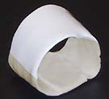
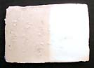

| Wonder
Glaze
A wide firing glaze with great 'fit'
The
so-called Wonder glaze is a wide firing glaze ranging from cone
4 to cone 11. It is a buttery smooth white at cone 4, becoming increasingly
glossier and translucent at higher cones, particularly in reduction.
It displays very good covering strength and very good glaze fit
characteristics, even if used as a once-firing glaze.
It can break to a tan color on darker, iron-bearing clays. It takes
on brushwork well, qualifying it as a type of higher fired majolica
glaze (due to the tin content). Coloring oxides may also be added
after minimizing or leaving out the tin oxide. Those wanting to
experiment may also try substituting the magnesium carbonate with
other fluxes such as barium carbonate or calcite. The tin content
in the original recipe can safely be halved when used over white
clays (tin is the most expensive component of this glaze) or the
covering power need not be so strong.
This
is a great glaze for people wanting a glaze that will fire over
a wide range and still work. This can be useful in an uneven kiln,
e.g. in gas kilns or wood firing kilns, where there can be large
temperature differences. It is also a great glaze for functional
ware, as there are no toxic components in the recipe.
The original recipe for this glaze calls for an Australian frit,
KMP 4108. This low alumina/high silica frit can be substituted with
Ferro Frit 3134, Hommel Frit 14 or Pemco Frit P-54. The original
frit composition is given further below.
Wonder Glaze Cone 4-11
Frit (see above): 50
Potash Feldspar: 20
Ball Clay: 20
Magnesium Carb Light: 10
Tin Oxide: 10
Frit KPM 4108:
Na2O: .319
Al2O3: .07
SiO2: 1.992
CaO: .681
B2O3: .636
Ababi Sharon has adjusted the recipe with Matrix
Glaze Calculator for US ingredients. His modified recipe:
Ferro 3134 41.00
Potash Feldspar (Norfloat) 20.00
Ball Clay AK 24.00
Magnesium Carb Light 10.00
Silica 5.00
Tin Oxide 10.00
The Wonder Glaze was from Janet DeBoos' first glaze
recipe book (Glazes for Australian Potters) published in 1978, and
was one of the few that were repeated in the second glaze book (More
Glazes for Australian Potters) because of its wide application and
usefulness. It was developed in glaze schools that she used to run
in the early seventies doing simple flux substitutions in standard
"glaze shapes". (50/20/20/10 being one such "shape")
It has been widely used throughout the Adult Education Ceramics
sector (and beyond) since.
More Articles
|